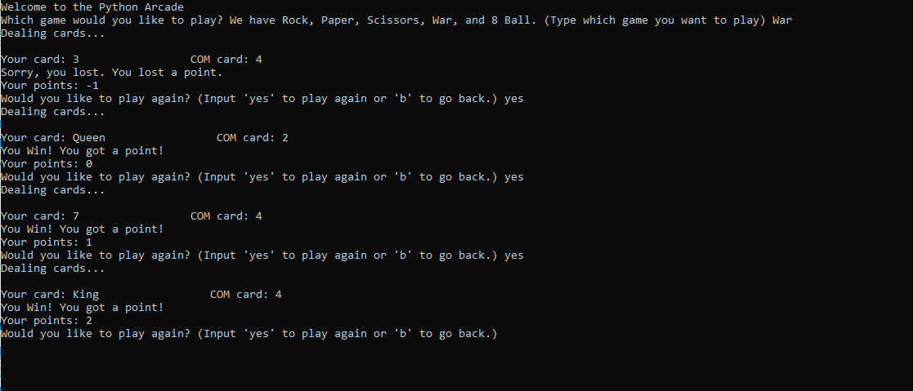
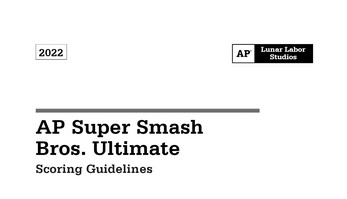

Above screenshot from Project #1: Super Smash Bros. Ultimate Jeopardy!
Above screenshot from Project #2: Python Arcade
Above screenshot from Project #4: AP Super Smash Bros. Ultimate Exam
Project #1: Super Smash Bros. Jeopardy! - Test your knowledge and trivia of Super Smash Bros. Ultimate! Can you answer all of the questions correctly?
Project #2: Python Arcade - Have some fun with some programs made in Python, such as "Rock, Paper, Scissors" ,"War", "Craps", and more, and ask fate defining questions to the Magic 8 Ball!
Project #3: Super Smash Bros. Ultimate Science - I break down the math behind the Legend Spirit of the FINAL FANTASY VII Spirit Board.
Project #4: AP Super Smash Bros. Ultimate Exam - Inspired by Cooperboard's Mock AP Exams, I have created my own AP Exam for Super Smash Bros. Ultimate! Included in the .zip folder are pdfs for the Multiple Choice Section, Free Response Section, Answer Keys and Scoring Guides for both, and a final grading rubric so you know what you "officially" scored, like for an authentic AP Exam. Test your knowledge and see if you pass! (Note: Yes, I am aware that the AP Super Smash Bros. Ultimate Exam can be found on Cooper Board (where the AP Minecraft Exam is hosted). I asked if they wanted to host it and they said yes).